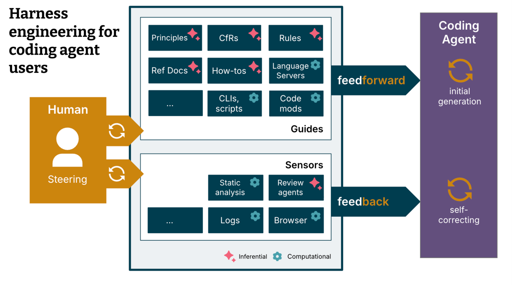
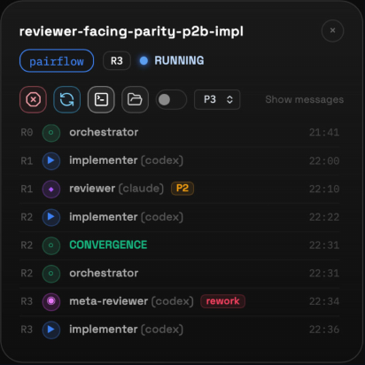
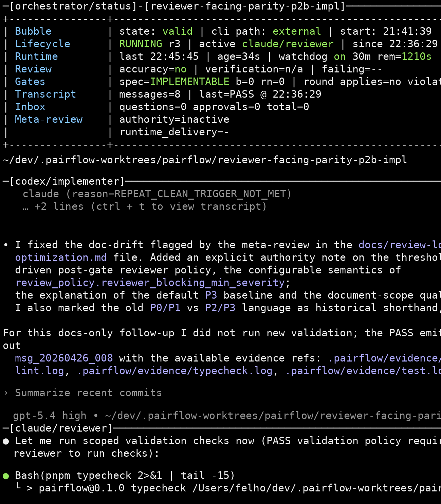
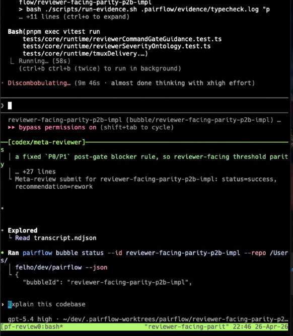
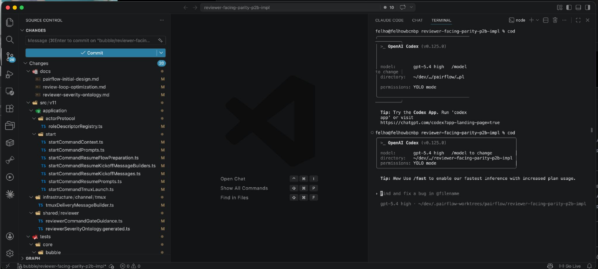
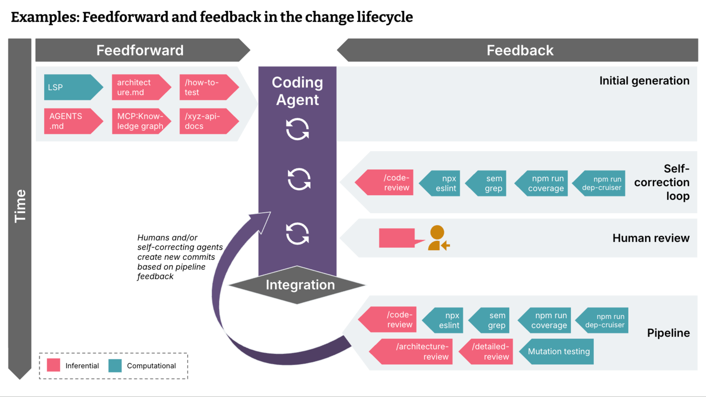
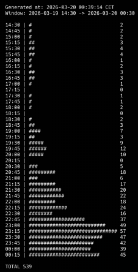

Prompt-by-
prompt
One interaction at a time.
Human keeps the workflow in their head.
My Journey Building Reliable
Agentic Workflows
https://github.com/felho/pairflow
Exploring real-world engineering
practice and workflow patterns.
Conversations with practitioners
and experts in the field.
Lots of hype and tools,
but not scalable solutions.
Clear patterns: reliable,
repeatable workflows that deliver.
One interaction at a time.
Human keeps the workflow in their head.
Agents work inside a system.
State, checks, routing, recovery.
AI helps with snippets, but you still write the software.
AI handles small tasks; you review each result immediately.
You and the AI code together, trading control in real time.
AI does most of the work; you review before it moves on.
AI works for long stretches; you review plans and outcomes.
You define goals; the system plans, builds, tests and ships.
https://www.danshapiro.com/blog/2026/01/the-five-levels-from-spicy-autocomplete-to-the-software-factory/

Makes agent work:
- steerable
- observable
- correctable
https://openai.com/index/harness-engineering/
https://martinfowler.com/articles/harness-engineering.html
who does this piece of work
what context and guidance it gets
what artifact it must produce
checks, routing: when it is
ready and what comes next
Guidance:
skills, tools, etc.
what it has
what it produces
Feedback:
checks, routing, etc.
makes the change
checks correctness and quality
checks completeness and alignment
An autonomous gate that checks whether reviewer convergence is actually justified and routes the task to approval or rework.
reviewer findings, change set, execution context
verify the fix of findings, checks system fit
structured answer: decision (rework, approval), issue set
validating answer, running tests, policy based routing
does bounded work and produces an artifact
owns state, routing, gates and recovery
becomes predictable and verifiable
deterministic workflow core
incomplete, inconsistent, uncertain
some gaps are fixed, new ones may surface
fewer contradictions, better evidence
good enough to trust and move forward
(chat)
(capability)
(control)
(quality)
Clarify context and intent.
Capture bounded work.
Execute inside an isolated worktree.
Check evidence before finishing.




Run a workflow fragment by hand.
Capture the repeatable pattern andrefine it.
Once trusted, turn the skill into a tool.
Make the tool reusable and safe to delegate.
ordered work waiting to be executed
isolated implementation run
checks status: when a Pairflow
run is ready, it triggers
the skill
intent + control model
gap analysis + sequencing
bounded slice + contract
proposed implementation slice
checks whether the task is ready to converge
make the slice safer before it runs
too much in one task
missing clarity or checks
ready to implement
but the task is not anchored deeply enough
connected to meaning and system reality before implementation
candidate slice before implementation
refine, split or approve the task

https://martinfowler.com/articles/harness-engineering.html
changes can slowly erode architecture
what should remain true about the system
turn the expectation into an executable check
drift becomes visible during the workflow
Core logic stays separate from technical plumbing.
Dependencies only flow in allowed directions. No cycles.
adapters and entry points
use cases and orchestration
core concepts and rules

large refactoring across the codebase
architecture expectations checked repeatedly
the application still worked after the refactor
…for risk reduction, better odds, saved attention and learning.
make failure visible earlier
raise the chance that work converges
move monitoring into the system
turn repeated failures into reusable control
This is not the baseline. But it shows what becomes possible when the harness works.
The harness created a safer way to
run, review and improve
work.
In the past, this would likely have taken
multiple weeks for a
team of 4–5 engineers.
I was working on other things as well.
If you fix an issue at the harness level,
it pays dividends for
every future use.
Every repeated failure is a signal: improve the harness.
same issue appears again
fix the system, not just the output
the fix is reused automatically
better workflow reveals the next improvement
But the most valuable parts of a harness are often specific to your codebase, workflow and team.
So you will need to build some of it yourself, anyway.
Reusable infrastructure, models, IDEs, runners and orchestration patterns.
System-specific checks, roles, gates, recovery logic and workflow knowledge.
Turn open-ended agent work
into reliable, observable and
recoverable workflow steps.
Agents need clear
direction and fast
feedback to work.
Good outcomes emerge through
constrained loops, not from
one
perfect generation.